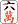
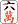

（122）跳ねムーン ２ 解答
|
オーラス、トップ目の親と15000点差の２着めというとき、高めならダマロンでも満貫という手をドラなしでテンパった。リーチしたかったが、トップ目直撃をねらってダマテンにした。
すると数巡後、みごとハネマンをツモリあげ、大逆転した。このアガリの一例を示してほしい。なお手牌にはドラも無ければ字牌もない。（by
Majokko）
     
|
かざやともひろ 投稿日：2005/10/03(Mon)
お久しぶりです。久しぶりに解いてみたので投稿します。
   
高め ですが、普通に栄和だと30符４翻で満貫に届きません(逆転はできますけど)。そこで「実は親がをポンしている」とします。ｗ ですが、普通に栄和だと30符４翻で満貫に届きません(逆転はできますけど)。そこで「実は親がをポンしている」とします。ｗ
親の小明槓に対して搶槓で栄和すれば…平和・一般高・一気通貫・搶槓でめでたく満貫と相成ります。強引ですかね？
そして「跳ねムーン１」と同様に海底でツモれば、門前清模和・海底撈月・平和・一般高・一気通貫で６翻、跳満です。
平和絡みだと４翻で足りないのがつらいですね。かといって暗刻系を絡めると高めでなくても満貫確定とか、ツモったら四暗刻とか…
もっと美しい解答はあるのでしょうか？？
|
あさみ 投稿日：2005/10/03(Mon)
こんにちわ、かざやさん。おひさしぶり。(^-^)/
跳ねムーン２、正解でーす。
>普通に栄和だと30符４翻で満貫に届きません。
たしかに30符六翻（含・場ゾロ）を満貫としないルールもありますね。
その点にコメントしてなかったのはσ(-_-)のミス。搶槓など無くても、ピンフ・一通・一般高の30符六翻で問題ありません。
>もっと美しい解答はあるのでしょうか？？
もっと美しいかどうかは分かりませんが、別解はあります。
|
百貫雀 投稿日：2005/10/03(Mon)
何故、リーチしなかったか？
高め、直撃で逆転だったのは確かだが、一手替わりで、大物にバける可能性があったからに違いない。
 
ってーのは、どうでしょうか？
|
あさみ 投稿日：2005/10/03(Mon)
こんにちわ、百貫さん。みごと正解です。(^-^)/
>一手替わりで、大物にバける可能性が
その予定だったのに、次のツモが .... (-_-) .... (-_-)
|
r@PCLabo 投稿日：2005/10/04(Tue)
「数巡後」ってので手変わりした、というのは無しですよね？
|
あさみ 投稿日：2005/10/05(Wed)
なるほろ...
ここへ続けて と引いて最後にツモとか.... と引いて最後にツモとか....
厳密には、「数巡後、手変わりしないのに みごとハネマンを...」とすべきでしたね。(^-^)
|